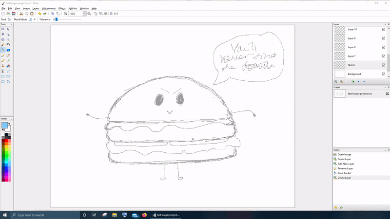
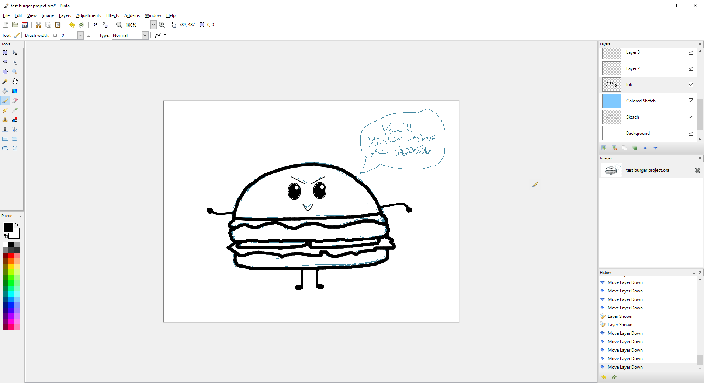
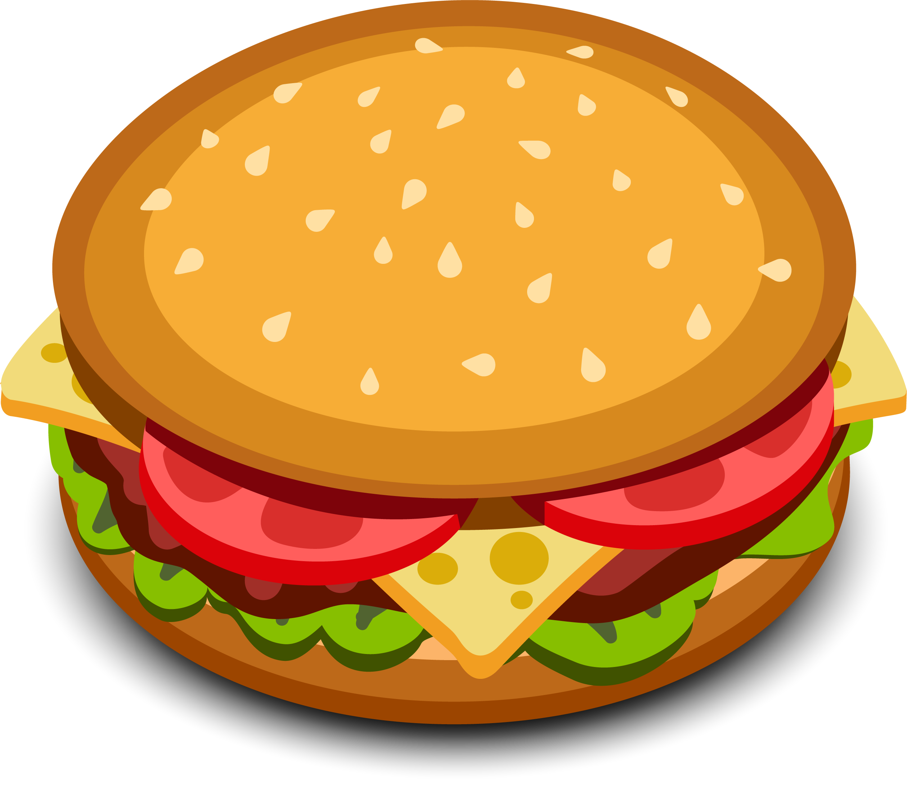
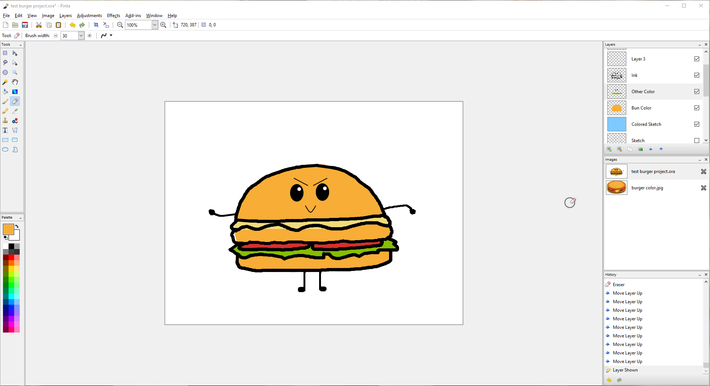
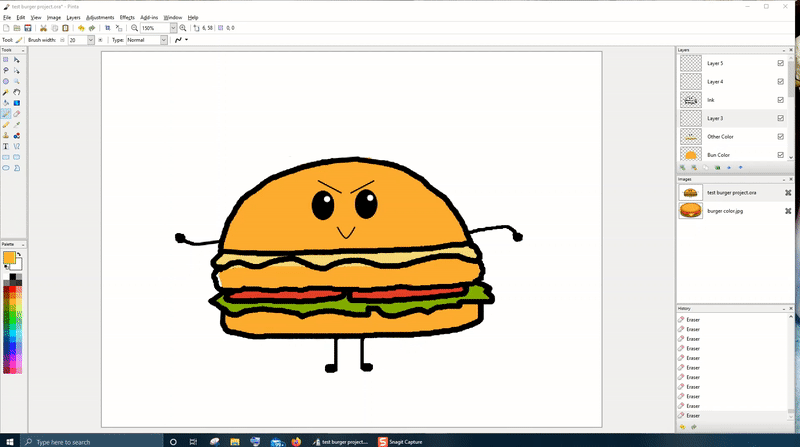

Tutorial¶
Note
Before we begin, please make sure you have setup and understood your workspace. If you have trouble setting up or understanding how to start, please click here for a quick workspace guide.
In this tutorial, we will learn how to create a final image by using these key ingredients and techniques:
- Working with layers;
- Making selections;
- Sketching and painting;
- Working with color;
- Adding text and shapes;
- And utilizing various common tools.
By the end of this tutorial, we will create this little secret burger:

Although this is a tutorial on creating an image, this is not a drawing tutorial so we cannot guarantee if your drawing will look exactly as our image. To keep the images consistent, we'll be drawing a very basic burger. It should have at least a top bun, a bottom bun, cheese, a patty, tomatoes and lettuce.
Sketching¶
The tools we'll use for sketching are:
- Pencil
- Eraser
- Lasso Select
- Shapes
- Lines
- Text
Now we can get started on sketching our little secret burger!
- Select Layer 2 in the Layers Window. Make sure the Background layer is below the new layer.
- Double-click the layer to open the Layer Properties.
- Rename the layer to "Sketch".
- Click OK to close the window.
- Select "Sketch" to make it an active layer.
- Use the Pencil tool to start drawing your burger.
- Use the Eraser tool to remove any markings not needed.
- Change the Eraser size as needed in the Tools Settings Bar.
- Use any selection tool to move any sketches around. In this case, we used the Lasso Select tool to move the text box up higher.

- Use the Shapes, Lines and Text tools to help create your sketch if that is your preference, but for this tutorial, we chose to use the pencil.
- You can also upload a hand-drawn sketch as well too. Go to Setting Up Workspace to learn more.
- Save your progress and it should look like this:

Before we move on to inking the sketch, we want to change the color of the pencil sketch so that it's easier to see between the (black) inking and the (black) sketch itself. Blue would be a nice color to see through, but you're welcome to use whichever color you prefer.
- Create a layer in the Layers Window. Make sure this new layer is above layer "Sketch".
- Double-click the layer to open the Layer Properties.
- Rename the layer to "Color Sketch".
- Select "Color Burn" under the Blend Mode drop-down.
- Click OK to close the window.
- Select "Color Burn" to make it an active layer.
- Click on the Paint Bucket and left-click on a palette color.
- Click on the drawing to apply the color.
- Save your progress and it should look like this: 
As you can see in the Layers Window, the Color Burn layer is fully colored in, but from the drawing, it only burned in the color onto the pencil sketch itself. This can only work when the layers are stacked accordingly. Otherwise, the color would just lay on top of the sketch layer, completely covering it.
Inking¶
The tools we'll use for inking are:
- Pencil
- Eraser
- Shapes
- Lines
This part of the process, we'll be inking the rough sketch itself so that all the lines needed are more distinct.
- Create a layer in the Layers Window. Make sure this new layer is above layer "Color Sketch".
- Double-click the layer to open the Layer Properties.
- Rename the layer to "Ink".
- Click OK to close the window.
- Select "Ink" to make it an active layer.
- Use the Paint Brush tool to start inking over your rough sketches.
- Same as with sketching, use the Eraser tool to remove any markings not needed.
- Use the Shapes and Lines tools to help create your image if needed, but we will skip on the Text tool for later on.
- Save your progress and it should look like this:

Coloring¶
The tools we'll use for coloring are:
- Burger image reference
- Palette
- Color Picker
- Paint Brush
- Eraser
- Gradient
This is now the fun part: coloring! For the purposes of this tutorial, we also added in this burger image for you to download as a color image reference for when we pick colors. Go ahead and save the image down below: 
Bun¶
Now let's begin with the bun:
- Uncheck the box for the Sketch layer in the Layers Window to hide the sketch from view. We won't be needing it for this process.
- Create a layer in the Layers Window. Make sure this new layer is below layer "Ink".
- Double-click the layer to open the Layer Properties.
- Rename the layer to "Bun Color".
- Click OK to close the window.
- Select "Bun Color" to make it an active layer.
- Go to File > Open... and open the saved burger image reference.
- Use the Color Picker tool to pick the bun color from the reference and click on the project image under the Image Window to switch back to the burger project.
- You can create and modify your own color by double-clicking on the primary or secondary color in the Palette.
- Use the Paint Brush to color in the entire burger.
- You can enlarge the size of the Paint Brush in the Tools Settings Bar to speed up the process.
- Use the Eraser tool to clean up any color that was colored outside the lines.
- Save your progress and it should look like this:

Cheese, Tomatoes & Lettuce¶
We'll now work on the cheese, tomatoes, and lettuce:
- Create a layer in the Layers Window. Make sure this new layer is below layer "Ink" and above layer "Bun Color".
- Double-click the layer to open the Layer Properties.
- Rename the layer to "Other Color".
- Click OK to close the window.
- Select "Other Color" to make it an active layer.
- Using the same concept as the bun, use the Color Picker Tool to pick the colors from the reference to apply to the project for the cheese, tomatoes, and lettuce.
- Use the Paint Brush and Eraser tools to color in the appropriate areas.
- Save your progress and it should look like this: 
Patty¶
For the patty, we want to create a gradient to replicate the over-grilled side of the patty:
- Create a layer in the Layers Window. Make sure this new layer is below layer "Ink" and above layer "Other Color".
- Double-click the layer to open the Layer Properties.
- Rename the layer to "Patty Color" and change the opacity to 90.
- Click OK to close the window.
- Select "Patty Color" to make it an active layer.
- Use the Color Picker tool to pick the patty color using from the reference image and switch back to the project.
- Right-click the "Black" color in the Palette to set the secondary color.
- Click on the Gradient tool.
- Click and hold on the drawing while dragging the cursor in different directions to form a gradient.
- Lift your finger once you are satisfied with the way the color is distributed.
- If you are not satisfied with the gradient placement, you can go back to step 9 and 10, and repeat until you are happy with the result.
- Use the Eraser tool to erase anything that is outside of the patty. Resize the eraser to get the required size.
- Double-click on the Patty Color layer and change the opacity to 100.
- Save your progress and the whole process should look like this: 
Shadows and Highlights¶
This area is optional so you can skip to the next section if you want. Now let's add some dimension by adding shadows and highlights to the burger:
- Create a layer called "Shadows" and another called "Highlights".
- Make sure both layers are below layer "Ink" and above layer "Patty Color".
- Click on the appropriate active layer in the Layers Window to apply shadows and highlights in their respective layers.
- Use the Color Picker tool to pick on the bun (or cheese, tomatoes, or lettuce).
- Click on the primary color in the Palette and modify the color to a lighter color for highlights and darker color for shadows. Click OK to close the window.
- Use the Paint Brush and Eraser tool to apply color where appropriate and remove unwanted color.
- It is recommended to resize the two tools to a smaller size for precision.
- Save your progress.
Adding Texts & Shapes¶
The tools we'll use for adding texts and shapes are:
- Shapes
- Lines
- Eraser
From here, we can start to add these elements against the sketch layer again.
- Create a layer called "Text" and place it below layer "Ink".
- Check the box for the Sketch layer in the Layers Window to unhide the sketch.
- Use the Ellipse tool to create a text bubble over the sketched bubble.
- Use the Line tool to connect the bubble towards the burger. Repeat for the other side so it becomes a speech bubble, just like the sketch.
- Use the Eraser tool to erase a part of the bubble that is connected to the lines to complete the speech bubble.
- Click on the Text tool and in the Tools Settings Bar, modify the font to your liking.
- Click inside the speech bubble to create a line of text.
- The text can be done line by line so you will need to play around with the undo command until you position your text where you want it to be.
- The text can only be modified before you place it on the drawing so use the History Window to track where you want to undo and redo your actions.
- Uncheck the box for the Sketch layer in the Layers Window to hide the sketch from view as we will no longer need the sketch.
- Save your progress and it should look like this:

Finished Image¶
Your little secret burger is now complete! You can change the Background layer to whatever color you want. Just make sure you select it as an active layer before you begin. What we did here was apply a primary blue with secondary light-blue gradient.

You can now save your image as any image file format besides .ORA and use it externally now.